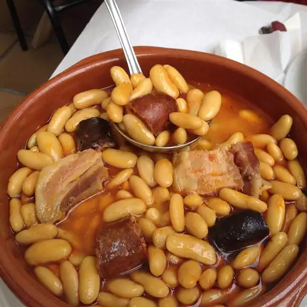

Fabada Asturiana

Description
Fabada asturiana, often simply known as fabada, is a rich Asturian bean stew, originally from and most commonly found in the autonomous community of Principality of Asturias, but widely available throughout the whole of Spain and in Spanish restaurants worldwide.
Ingredients
- 1 pound dried Asturian fabada beans or dried lima beans
- ¼ pound salt pork
- 10 cups water
- ½ teaspoon crushed saffron threads
- 8 ounces serrano ham, cut into 1/4-inch cubes
- 8 ounces Spanish chorizo sausage, casing removed, sliced 1/2-inch thick
- 8 ounces morcilla sausage or blood sausage, sliced 1/2-inch thick
- 1 bay leaf
Directions
Cover beans with ample hot water and allow to stand overnight.
Fill a Dutch oven 1/2 full with water and bring to a boil over high heat. Add salt pork, and allow to boil for 5 minutes, then remove. Pour out water.
Drain water from beans and place them into Dutch oven. Pour in 10 cups of water, then bring to a boil over high heat. Boil for 15 minutes, skimming and discarding the foam that forms on top. Stir in saffron, salt pork, and diced ham; simmer for 5 minutes. Add the chorizo and morcilla sausages, and cook for 5 minutes more. Skim any foam that forms on top.
Reduce heat to low, add bay leaf, cover, and simmer until the beans are tender, 2 to 3 hours, adding water if needed to keep beans moist. Allow beans to stand for 20 minutes off of the heat before serving.